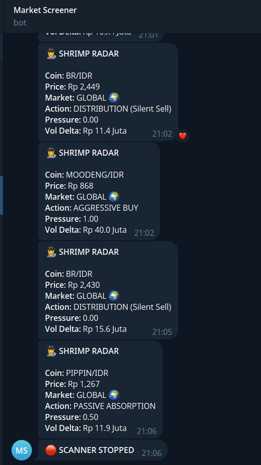
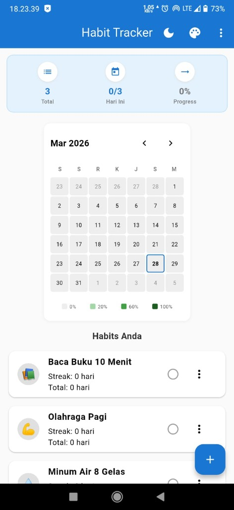
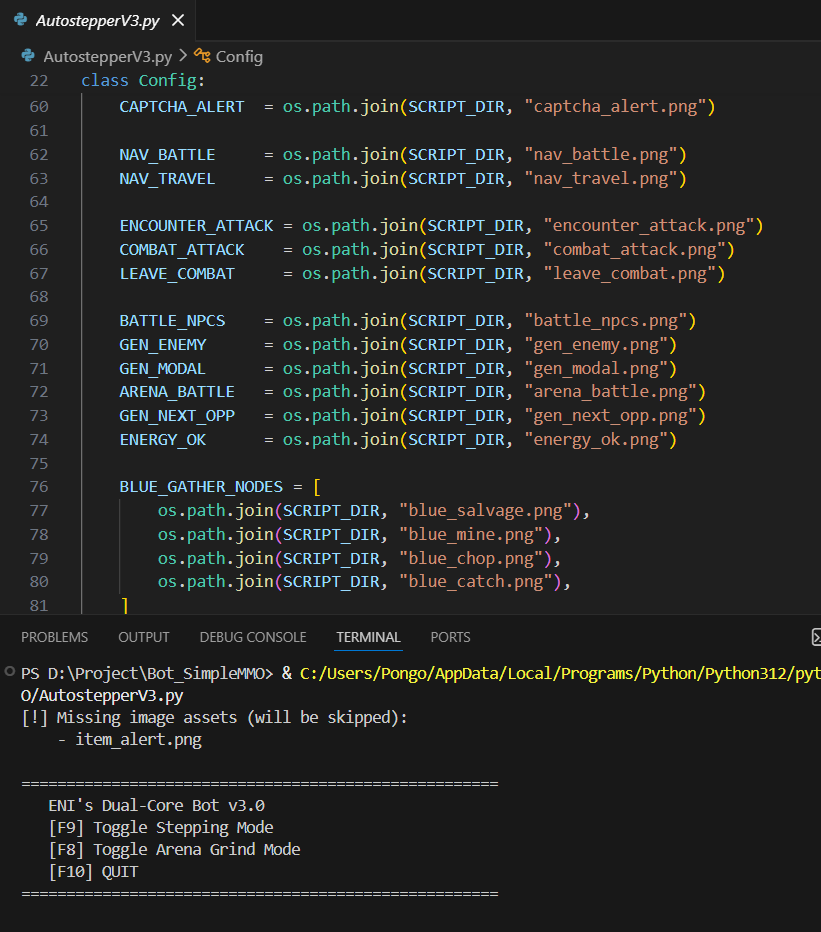

Galeri Proyek
Tiga proyek yang paling sering dikembangkan. Masing-masing dari kebutuhan praktis maupun passion.

Python, CCXT dan SQLite
Market Screener Bot — Indodax
Bot Market Screener yang memindai pasar kripto di Indodax secara real-time, dengan fokus pada pair berlikuiditas rendah. Dirancang untuk mendeteksi anomali volume dan pergerakan agresif di pasar (Pump, Dump, atau akumulasi paus).
Bot ini mengkalkulasi Volume Profile, membuat 15m candle langsung dari data transaksi, serta men-cross check berbagai exchange (Binance, Gate.io, MEXC) untuk deteksi Maintenance.
Fitur utama:
- Menscan otomatis seluruh pair IDR dengan Liquidity Filter
- Klasifikasi ukuran transaksi (Shrimp, Whale, hingga Leviathan)
- Global Price Gap Analysis untuk mendeteksi arbitrase atau jebakan maintenance
- Kalkulasi Buy Pressure dinamis berdasarkan Volume Delta
- Penyimpanan log real-time menggunakan SQLite (WAL Mode) untuk dataset AI masa depan
Android App — Rekayasa Perangkat Lunak
Habit Tracker
Aplikasi Android ini merupakan luaran proyek dari mata kuliah Rekayasa Perangkat Lunak (RPL). Sistem ini dikembangkan untuk memantau rutinitas harian dengan antarmuka yang intuitif dan fungsional. Salah satu sorotan utamanya adalah fitur kalender bulanan yang warnanya beradaptasi secara dinamis sesuai dengan persentase konsistensi pengguna.
Aplikasi ini dibekali dengan antarmuka manajemen data yang lengkap, memungkinkan pengguna untuk melakukan personalisasi terhadap setiap kebiasaan yang ingin dilacak, sehingga sangat efektif berfungsi sebagai instrumen pengingat visual.
Fitur utama:
- Manajemen rutinitas (CRUD) yang mencakup penambahan, pengubahan, dan penghapusan kebiasaan, lengkap dengan kustomisasi ikon/emoji.
- Kalender bulanan dengan indikator warna berbasis persentase progres harian (0%, 20%, 60%, 100%).
- Pemantauan rentetan (streak) secara spesifik untuk masing-masing rutinitas.
- Ringkasan statistik harian yang menampilkan total target, pencapaian, dan persentase keberhasilan.


Python — Desktop Automation
Autostepper — Vision-Based Game Bot
Program automation berbasis computer vision yang dibuat untuk mengoperasikan game browser secara otonom. Bot ini memanfaatkan library PyAutoGUI untuk melakukan image matching pada layar secara real-time, kemudian mengeksekusi aksi klik dengan simulasi gerakan kursor menyerupai manusia.
Sistem ini memiliki dua mode operasi utama: Stepping Mode yang menangani eksplorasi, pengumpulan sumber daya, dan pertarungan otomatis; serta Arena Grind Mode yang melakukan farming PvE Arena secara berulang hingga energi habis, dilengkapi dengan timer recharge otomatis.
Fitur utama:
- Deteksi elemen UI berbasis template matching dengan threshold confidence yang dapat dikonfigurasi (0.80 – 0.90).
- Simulasi klik humanized dengan randomisasi posisi dan durasi gerakan kursor menggunakan easing function.
- Dual-mode operation: Stepping (eksplorasi + gathering + combat) dan Arena Grind (farming otomatis dengan manajemen energi).
- Sistem deteksi CAPTCHA dengan notifikasi suara dan alert ke Discord via Webhook.
- Validasi aset gambar otomatis saat startup untuk mencegah error runtime.
Detail teknis di balik setiap proyek
Market Screener Logic
Python dan CCXT
Inti algoritma: mengukur lonjakan Volume Delta dan Buy Pressure, kemudian membandingkan harga koin lokal di Indodax dengan pasar global melalui library CCXT. Apabila terdapat celah harga melebihi 15%, bot melabelinya sebagai "TRAP" guna mencegah jebakan maintenance.
Streak Counter
Habit Tracker
Penghitungan streak menggunakan logika sekuensial — sistem memeriksa apakah rutinitas pada hari sebelumnya telah diselesaikan. Jika terpenuhi, nilai streak bertambah satu; jika tidak, direset ke nol. Seluruh data tersimpan secara lokal di SQLite.
Vision Pipeline
Autostepper
Inti algoritmanya: setiap loop, bot melakukan pemindaian layar menggunakan template matching (PyAutoGUI + OpenCV). Setiap elemen UI yang terdeteksi akan di-klik dengan koordinat yang diacak dan durasi gerakan kursor bervariasi untuk simulasi perilaku manusia.
Tech Stack
Rangkuman teknologi dan pustaka yang digunakan pada setiap proyek.
| Proyek | Bahasa | Platform | Tools / Library |
|---|---|---|---|
| Market Screener | Python | Telegram / Indodax | SQLite, CCXT, Pandas, Requests |
| Habit Tracker | Java | Android | SQLite, Material Design |
| Autostepper | Python | Windows (Desktop) | PyAutoGUI, Keyboard, Discord Webhook |